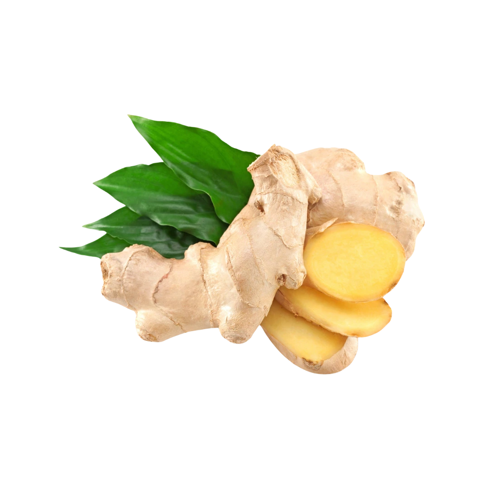

We are certified Ceylon Ginger suppliers from Sri Lanka, exporting premium ginger root with aromatic and spicy qualities to the EU, USA, and 40+ countries worldwide — serving culinary, wellness, and functional food industries.
Ceylon Ginger (Zingiber officinale) is known for its high pungency, warm citrus aroma, and bold flavor. Our ginger is grown in Sri Lanka's mid-hill regions, harvested at peak maturity, and sun-dried or powdered while retaining its essential oil content.
Sri Lanka – Central Highlands
Whole Dried Rhizome · Powdered Ginger
Warm · Citrusy · Slightly Peppery
Spices · Beverages · Herbal Remedies · Essential Oils

Compared to other origins like India or China, Ceylon Ginger has a cleaner flavor, lower fiber content, and superior drying quality for premium applications.
Our ginger is cultivated without chemical fertilizers and is hand-cleaned and dried to perfection, preserving its natural zingiberene concentration.
Whether for spice blends, ginger tea, natural extracts, or functional foods, Sri Lankan Ginger delivers consistent quality and long shelf life.
We supply food-grade, pharmaceutical-grade, and export-grade options to match every requirement with full traceability from root to pack.
Supports gut health, reduces nausea, and improves metabolism naturally.
Used in caffeine-free blends, detox teas, and herbal drink mixes for a warm kick.
Known for anti-inflammatory and immune-boosting properties in Ayurvedic formulas.
Our ginger supply chain supports regenerative farming practices and ensures full traceability from root to pack.
Organic
Vegan
Gluten-Free
Non-GMO
| Botanical Name | Zingiber officinale |
| Forms | Dried Slices · Powder |
| Moisture | < 10% |
| Volatile Oil | 1.5 – 2.5% |
| Color | Golden Beige (Powder) · Pale Yellow (Slices) |
| Packaging | 100g · 500g · 1kg · 25kg Kraft Bags |
| Shelf Life | 24 Months |